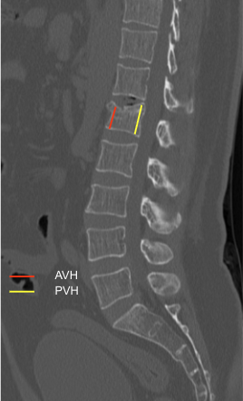

Adapted from: Walizai T, Vertebral compression fracture. Case study, Radiopaedia.org (Accessed on 05 Jan 2026) https://doi.org/10.53347/rID-202987
1) Description of Measurement
The Sagittal Index (SI) quantifies vertebral body wedge deformity in compression fractures by comparing the anterior vertebral body height (AVH) to the posterior vertebral body height (PVH) on sagittal CT images. This ratio reflects the degree of anterior column collapse and correlates with fracture severity, kyphotic deformity, and instability risk.
2) Instructions to Measure
3) Normal vs. Pathologic Ranges
4) Important References
McCormack T, Karaikovic E, Gaines RW. The load sharing classification of spine fractures. Spine (Phila Pa 1976). 1994 Aug 1;19(15):1741-4. doi: 10.1097/00007632-199408000-00014.
Parmar V, Bond E, Page PS, Josiah DT. Radiographic Outcomes Following Various Treatment Options of Thoracolumbar Burst Fractures. Int J Spine Surg. 2023 Apr;17(2):174-178. doi: 10.14444/8427.
Denis F. The three column spine and its significance in the classification of acute thoracolumbar spinal injuries. Spine (Phila Pa 1976). 1983 Nov-Dec;8(8):817-31. doi: 10.1097/00007632-198311000-00003.
5) Other info....
The Sagittal Index is particularly useful in osteoporotic compression fractures and traumatic wedge fractures.
Progressive decline in SI on serial imaging suggests fracture instability or progressive collapse.
Combine SI with posterior wall integrity and canal compromise for surgical decision-making.